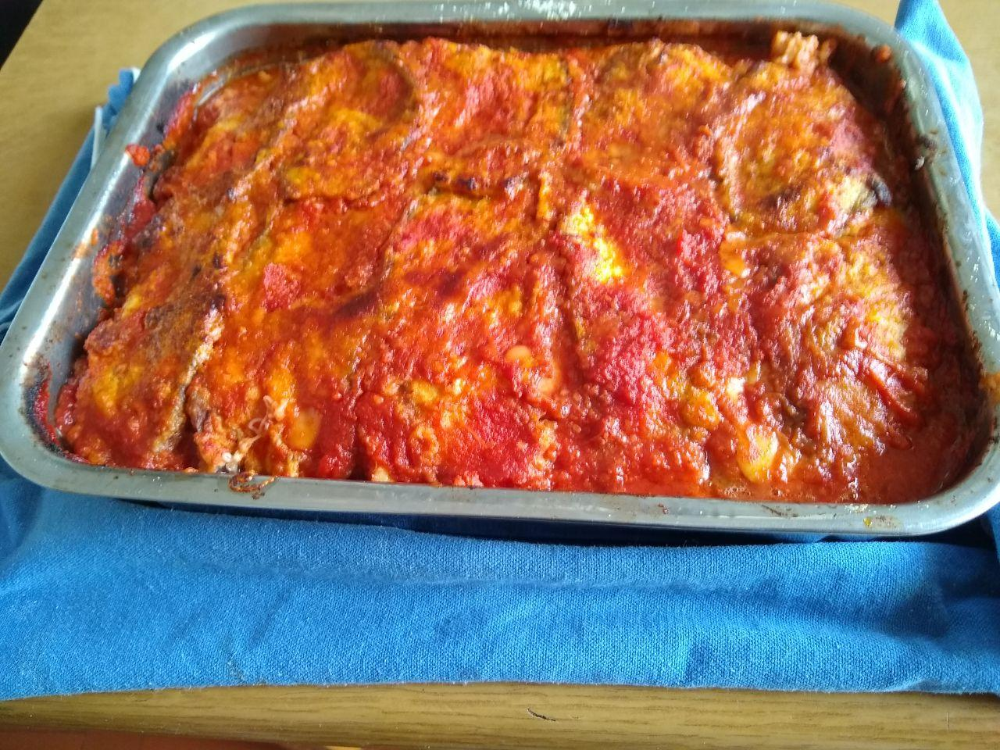

Lasaga Recipe

Actual picture of my mom's lasagna. She's not great at taking pictures though.
It's delicious, I promise, however that's not the recipe I will be giving you down below! You can have this generic american recipe instead.
Ingredients
- 1 (26 ounce) jar Prego® Traditional Italian Sauce
- 6 each uncooked lasagna noodles
- 1 (15 ounce) container ricotta cheese
- 2 cups shredded mozzarella cheese
- ¼ cup grated Parmesan cheese
Directions
- Spread about 1 cup pasta sauce in 2-quart shallow baking dish (11x7-inch).
- Top with 3 uncooked noodles, ricotta cheese, 1 cup mozzarella cheese, Parmesan cheese and 1 cup pasta sauce.
- Top with remaining 3 uncooked noodles and remaining pasta sauce.
- Cover.
- Bake at 375 degrees F for 1 hour Uncover and top with remaining mozzarella cheese. Let stand 5 minutes.